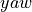
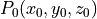
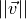

RMUC2022运动补偿
- Authors
Ligcox, Li
- Contact
- Date
2022/08/14
- Copyright
This document has been placed in the public domain.
概述
在RMU竞赛中，机器人自身的运动会对自瞄系统产生极大的偏差。该文档阐述了通过运动补偿模块，消除由于哨兵机器人自身底盘运动对自瞄系统产生的偏差。
流程
【添加流程图】
坐标系定义
云台坐标系通过轴与 轴连接在底盘上，初始坐标系
轴连接在底盘上，初始坐标系 。
。
其中：前方为 正方向，左方为
正方向，左方为 正方向，上侧为
正方向，上侧为 正方向。重力加速度
正方向。重力加速度  方向为
方向为  轴负方向。
轴负方向。
【添加rviz坐标系定义】
数学推导
在中:
中空间目标点、在变换矩阵 作用下，
变换为 、![\vec{v} = [vx, vy, vz]^\top](../_images/math/8bc095d999b4bd806110594956bcc05e0f678477.png) ，空间向量。
其中：
，空间向量。
其中：
弹丸初速度  通过裁判系统获得，一般地：
弹丸在空中飞行时间
底盘速度
经过修正后，云台偏转角度在底盘坐标系下的偏转角度为 和 。
根据几何关系，有：
则:
由于云台 轴与 轴刚性连接到底盘，云台在底盘坐标系下偏转角度 和 即为云台相对于当前位置偏转角度。
功能实现
Note
运动补偿的相关代码位于 bubble_contrib/bubble_aming 模块下
变换矩阵 通过机器人URDF文件及当前偏转绝对角度通过tf tree获取。
目标点 信息通过识别器经由 PnP解算 获得。 PnP解算将世界坐标系下目标的位姿信息转换为相机坐标系下：
对于实际使用的目标在 下的位姿估计值，由于相机坐标系与云台坐标系存在平移偏移。
实现过程中，解算结果的 tvec 为目标在云台坐标系（更准确地说是在弹丸射出的摩擦轮位置坐标系）的位姿信息。
此外，在进行补偿的过程中， 为弹丸射出后击中目标的时间，而 原点位于机器人底盘的几何中心。
因此，实际求解过程中使用的 与数学推导中有一定的变化。
tf tree获取的 为：
实际使用的 为：
![^{chassis}_{gimbal}T_{tf\_tree} = \left[\begin{array}{ccc} ^{chassis}_{gimbal}R^\top & 0 \\ 0 & 1 \end{array}\right]](../_images/math/1b044c7124cda6a0752c82705b63baf500cb75eb.png)
获得 后， 能够求解空间向量 。
通过numpy的 numpy.poly1d 模块，
求解含 多项式 的解。
应当包含4个解，刨除两个负数解后， 的剩余解分别弹丸在瞄准姿态和抛射姿态击中目标的时间。取其中较小的一个，即为所求时间 。
一般的， 和 值域均为 ，因此使用 求解。
结语
文档阐述了当前版本Bubble中运动补偿模块实现的过程，通过对向量 的修改，还能够消除云台运动、空气阻力等对弹丸飞行造成的影响。